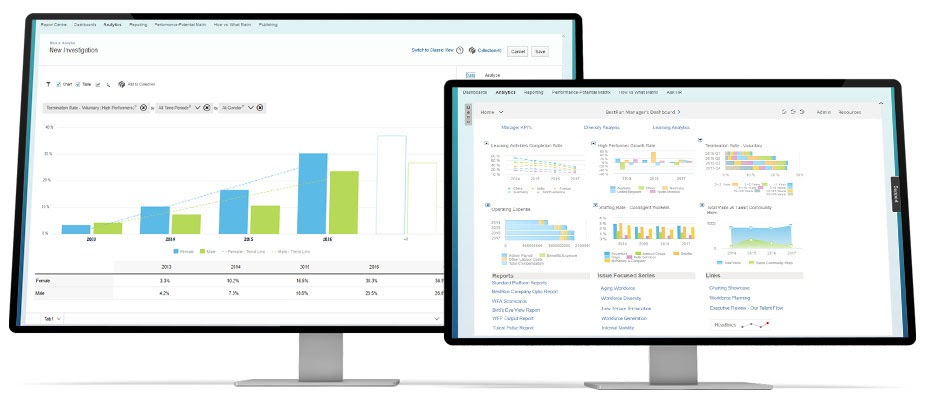

Playing the Number Game: 3 Ways Companies Are Utilizing Competitive Benchmarking for Cutting-Edge Workforce Analytics

Imagine yourself in the following scenario: You, an HR recruiter for a top executive tech company, blissfully saunter into your office cubicle, plopping yourself into your swivel chair. You remember the previous night, pulling your hair out and sweating in agony as you crunched numbers by the second, weighing the ultimate cost-benefits of hiring tech talent from Facebook, Google, Snapchat, Microsoft, etc— you name it!
And guess what? You don’t only have the overarching responsibility of establishing and optimizing the best channels of tech talent recruitment; you also must attend to all the messy details and tricky protocols of hiring equitably. Ultimately, you are indirectly responsible for determining, hiring, and positioning the top tech hirees across the nation in just a couple of weeks to months. Pace yourself, and take a deep breath. You can do this.
Nearly a decade ago, emerging startups and supergiant tech corporations sent HR recruiters to search the country for the best out-of-university talents ‘on the fly’, day by day, second by second.
Now, before we get all hyped up in this glossy reality of ‘picture perfect’ analytics and workforce insights, we should understand how companies are using these life-changing tools to their advantage.
1. Xerox: Using Big Data Insights to Increase Employee Retention
When we discuss big data in business analytics, we usually think of complex visualizations used for ‘rinse and repeat’ processes like hiring, recruiting, and assessing revenues/profit margins. However, Xerox, an American global corporation that sells print and digital document products, cleverly used the upper edge of extensive data analysis in employee retention insights. Xerox used big data analysis to find out how to retain its customer service employees. And what they discovered?— Employees who stuck with their jobs longest tended to be the ones who lived nearby and had reliable transportation.
Xerox, ultimately, jump-started a pilot program— a sort of “controlled experiment”— in their department and decreased attrition/employee bailout rates by nearly 20%. By using these data insights as a force behind their pilot program, Xerox was able to create a sustainable employment model, minimizing the employee attrition rate and retaining more reliable long-term employees.
2. IBM: Defining and Extracting Successful Sales People
IBM, a supergiant in competition with Deep Learning, Artificial Intelligence, and Watson Analytics, unsurprisingly leverages workforce science in business applications. In 2012 IBM spent nearly ~$1.3 billion towards acquiring, recruiting, and training the company Kenexa, which houses a large store of data from surveying and assessing 40 million job applications, workers, and managers a year.
After filtering and visualizing data on over 40 million job applications, IBM came to a new understanding of what makes a successful salesperson. Traditionally, we’d assume that outgoing and bubbly personalities would be a key attribute in salesmanship; however, IBM compared worker surveys and tests, concluding that the most important characteristic for sales success was actually emotional courage.
IBM’s unconventional utilization of intelligent business analytics and big data visualization allowed them to extract never-before-seen patterns. For emerging companies and startups, these practical data visualization platforms could quickly jumpstart and provide an edge in the tech recruitment process.
3. Google: Evaluating the HR Hiring + Interview Process
Google’s complicated relationship with big data in the HR recruitment and technical interview process is a long-standing lesson that workforce analytics can provide harsh truths. The company analyzed and extracted data from tens of thousands of job interviews, comparing interviewers’ evaluations of the candidates with the actual eventual performance level of the people who were hired.
Although the project failed to identify people who were particularly good at hiring (i.e. the data was a “complete random mess”), Google was able to determine other parameters, like the right number of job candidates to interview for each position and particular attributes that best predict success at Google.
Also, you know those mind-boggling “brain teaser” questions they use during the interview? Well, big data visualizations found that these brain teasers were actually a waste of time in effectively predicting employment success. More importantly, they found that “pure numbers” like GPAs and test scores were of little value, except for individuals fresh out of university.
In the end, Google teaches us that workforce analytics allows you to ‘shed off’ and remove unnecessary components of the tech-talent hiring process. Big data visualization allows you to localize and understand the most essential phases of your HR recruitment process while scrapping the rest.
How Claro Changes the Game
Your mind is probably simmering with the question of “Is there an all-in-one solution to improved workforce analytics and benchmarking?” Well, we would’ve grappled with that question nearly 10 years ago; however, Claro has filled the gap. Claro helps companies leverage talent as a competitive advantage by combining talent search, workforce analytics, and data visualization into one unique User Experience (UX).
Companies can use Claro to find diverse talent more efficiently, to execute competitive talent benchmarking and workforce planning, to gain early insights into potential employee disengagement, and to do employee attrition modeling. Claro offers state-of-the-art techniques, including SaaS web-based Search-as-a-Service and Analytics-as-a-Service products used by HR and Recruitment organizations. What’s even cooler? Claro provides API access to unique workforce metadata used by system integrators, allowing you to easily integrate their visualization toolkit into your existing HR department.
Many of Claro’s leading use-cases include identifying and retaining top talent, eliminating workplace bias, and uncovering problems you never even knew your company had. All in all, Claro ties the bow on workforce analytics nicely by covering ground on all areas of business analytics and visualization.

About The Author
Daniel Fleury is a technical content writer that ideates, produces, and tailors actionable content for consumers and businesses.